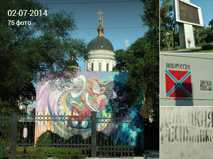

Cesta humanitární sbírky pro Donbass
Cesta v Doněck a zpátky dopadla dobře.
Postupně budu přidávat podrobností k
fotografiím.
Cesta autem Praha - Uspenka
Cesta Praha - Brest. Den První
Cesta Brest - Voroněž. Den Druhý
Cesta Voroněž - Taganrog. Den Třetí
Cesta Uspenka - Doněck. Den Čtvrtý | MAPA
Cesta Doněck - Izvaryne. Den Pátý | MAPA

Cesta Rusky Doněck - Taganrog. Den Pátý |
MAPA
Cesta Taganrog - Orel. Den šestý |
MAPA
Cesta Orel - Brest. Den sedmý |
MAPA

Brest. Den sedmý |
MAPA
KONTAKTY